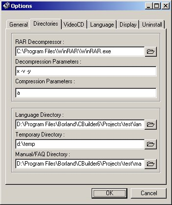

|
|
Configuration
Clicking on the VCDGear [options] button will display the configuration screen similar to the following:
Enable or disable the first five choices to suit your needs.
| Disable MPEG header correction | If VCDGear encounters an MPEG file without a system header during fixing, it will try to add a header to make the file playable. (default: not checked) |
| Disable MPEG file splitting | VCDGear can split your MPEG files into separate parts if it finds that the GOP times differ which might indicate that an MPEG might have been joined by two or more video files. The video would then be split back into its original clips. Unfortunately, a number of encoders to not properly encode GOP times which might fool VCDGear into splitting at the wrong locations. (default: checked) |
| Disable error prompts | Error popups will not appear. (default: not checked) |
| Disable audio beep on warnings | Beeps will not occur during warnings. (default: not checked) |
| Include full path information in CUE index file | Includes the full path into the CUE file during (S)VCD imaging. (default: not checked) |
The lower slider represents the
priority setting for VCDGear. Default setting is normal.
Setting this value to high will only
be noticeable if you run a large number of applications
in the background concurrently.

The directories and
compression settings are on the second configuration page. There are
default values already entered for the compression/decompression
parameters. These generally
will not need to be modified. Choose the location of the WinRAR executable
for the RAR
decompressor.
The VideoCD page contains the options needed to create a (Super)VideoCD.
| Add CD-i Application | Adds the CD-i application files to create VideoCD compliant images. Generally this must always be checked to ensure that VCD/DVD players will play the disc properly |
| Use MPEG2/MPEGAV directory | Some DVD players can only read SVCDs if the video tracks are located in the MPEG2 or the MPEGAV directory. Change this if you know which one your player is able to read from. |
| Use ENTRYVCD/ENTRYSVD identification | Same as the above. |
| Create Philips compliant SVCD | Enabling this option will turn on compliancy with Philips SVCD standard and it might be necessary on certain players. Generally this is not needed for the majority of players out there. |
The next page is the language
selection page. Pick the language file you want VCDGear to load up by
clicking on [select] followed by the language file. Language switch will
take effect immediately after you
click OK.
Select the colours you want VCDGear
to show if a certain # of errors and warnings occur. The tolerance
for how many corrections before a warning or error colour is displayed can be
adjusted.
Uninstalls VCDGear from your system's registry. VCDGear will remain in your hard drive until you delete it.